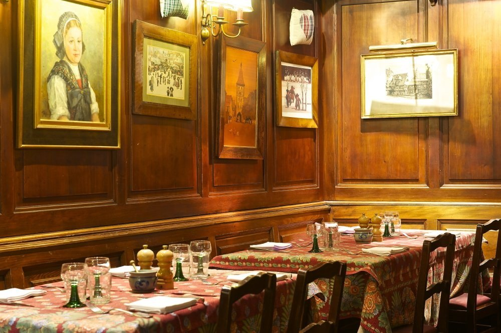
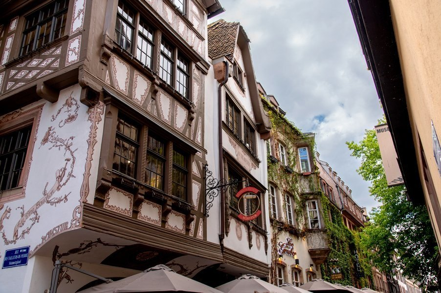
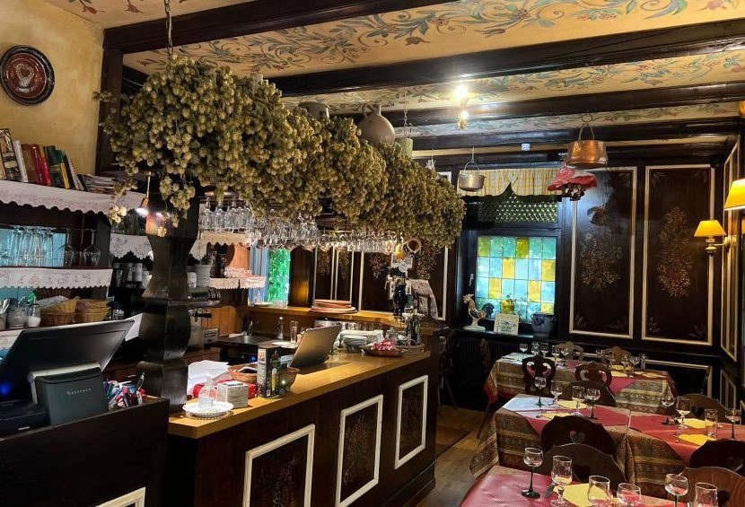
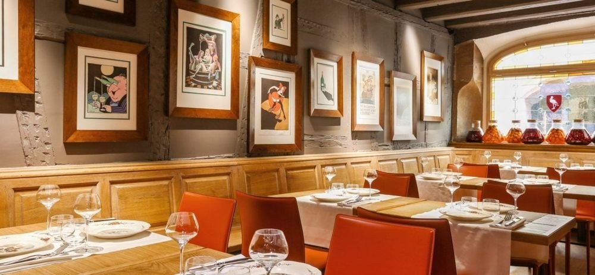

Winstub à Strasbourg : 7 adresses authentiques
Sept maisons, de la plus ancienne de la ville à la plus récente, avec ce que les listes oublient : les jours de fermeture, les prix relevés à la carte, et une adresse que tout le monde recopie de travers.

La winstub est l'âme de Strasbourg, et c'est aussi son mot le plus galvaudé : une quarantaine d'établissements de l'hypercentre s'en réclament, et tous ne le méritent pas. Voici sept maisons qui tiennent, avec pour chacune l'adresse exacte, les jours d'ouverture et, quand la carte est publiée, les prix relevés à la source.
L'essentielLes winstubs de Strasbourg en 2026
- La winstub est un format, pas un décor : du mot allemand Weinstube, la pièce à vin. Carte courte, boiseries, vins au pichet, tables serrées.
- La plus ancienne est le Zuem Strissel, place de la Grande Boucherie : lieu de bouche depuis le XIVe siècle, et l'assiette la moins chère de cette page.
- Une seule distinction Michelin ici : le Bib Gourmand 2026 d'Au Pont Corbeau, qui ferme précisément le samedi.
- Une adresse mal recopiée : Le Tire-Bouchon est rue des Tailleurs-de-Pierre, pas rue de la Monnaie.
Qu'est-ce qu'une vraie winstub
Une winstub, c'est d'abord une atmosphère : boiseries patinées, nappes à carreaux rouges et blancs, banquettes serrées où les coudes des voisins frôlent les vôtres, poêle en faïence qui ronronne l'hiver, vins d'Alsace servis au verre dans des verres épais. La carte est courte, souvent manuscrite, sans photographies. Le personnel connaît les plats par cœur. Choucroute, baeckeoffe, presskopf, fleischnacka, coq au riesling : les classiques, rien que les classiques, exécutés avec le sérieux d'une recette qu'on ne discute pas.
Les signaux d'alarme sont connus : menu traduit en quatre langues avec photographies couleur, personnel en costume folklorique, carte de cinquante plats, choucroute à prix cassé. Mais un critère souvent cité mérite d'être nuancé. On lit partout qu'une maison ouverte sept jours sur sept vit du seul tourisme : quatre des sept adresses de cette page ouvrent tous les jours, dont la plus ancienne winstub de la ville. Le vrai révélateur, c'est la carte, pas le calendrier.
Ce que nous avons vérifié
À Strasbourg, ce qui se périme dans les sélections en ligne, ce ne sont pas les maisons, ce sont leurs coordonnées. Nous avons repris chaque adresse à la source, relevé les jours de fermeture, et noté les prix affichés sur les cartes publiées le 31 août 2026. Trois maisons ne publient pas la leur : nous l'écrivons plutôt que d'avancer un prix moyen.
Le reste relève des critères de notre grille. Pour un panorama plus large de la ville, restaurants contemporains et tables étoilées compris, voir notre palmarès des 8 meilleures tables de Strasbourg : cette page-ci ne traite que du format winstub.
Les 7 winstubs
-
01
Chez Yvonne
Strasbourg · Winstub, S'Burjerstuewel
Ouverte en 1873Gault&Millau 12,5/20
La salle de Chez Yvonne, rue du Sanglier. Photo Jérôme Up-Tools pour la Winstub Chez Yvonne. C'est l'adresse que les chefs d'État connaissent. François Mitterrand, Jacques Chirac et Helmut Kohl ont mangé rue du Sanglier, et Chirac y a poursuivi assez de sommets franco-allemands pour qu'un plat de la carte lui reste attaché : la tête de veau sauce gribiche, que la maison sert encore.
L'établissement a ouvert en 1873 sous le nom de S'Burjerstuewel, créé par Eugène Jacquemet. Il est devenu Chez Yvonne en 1956, quand Yvonne Haller l'a repris ; elle l'a tenu quarante-cinq ans. Le décor n'a pas bougé : boiseries cirées, nappes à carreaux, murs couverts de cadres, tables serrées. En cuisine, Serge Cutillo tient le répertoire sans le trahir : presskopf, quenelles de foie à la crème, choucroute aux cinq viandes, coquelet sauce aux champignons.
Ce qui peut décevoir : c'est la winstub la plus connue de la ville, donc la plus fréquentée, et le service se fait expéditif les soirs de plein. Réservez, et évitez 20 h un samedi.
Pour qui ? Ceux qui veulent comprendre d'où vient la winstub avant d'en visiter d'autres. Les repas de famille, les tables de passage qui ne reviendront pas.
- Adresse10 rue du Sanglier, 67000 Strasbourg
- Téléphone03 88 32 84 15
- Ouverturetous les jours, 12 h à 14 h et 19 h à 23 h 30
- Repère de cartemenu Gourmand à 41 €, relevé le 31 août 2026
-
02
Au Pont Corbeau
Strasbourg · Winstub
Bib Gourmand 2026
La salle d'Au Pont Corbeau, quai Saint-Nicolas. Photo Au Pont Corbeau. La winstub du connaisseur, et la seule de cette sélection à porter une distinction du Guide Michelin : elle est Bib Gourmand dans l'édition 2026, la mention qui récompense le rapport qualité prix. Elle est installée quai Saint-Nicolas, le long de l'Ill, face à l'Ancienne Douane et à côté du Musée alsacien.
Fenêtres à culs-de-bouteille, boiseries sculptées, nappes à carreaux, mobilier régional : le décor est celui d'une winstub de manuel, sans la mise en scène. La carte suit : presskopf, choucroute garnie, jambonneau, spätzles maison, et une sélection de vins d'Alsace au verre qui justifie à elle seule le détour.
L'obstacle est le calendrier. La maison ferme le samedi et n'ouvre le dimanche que le soir : dans une ville de week-end, c'est exactement l'inverse de ce qu'on attend. Vérifiez avant de traverser la ville.
Pour qui ? Ceux qui viennent pour boire autant que pour manger. Les dîners en semaine, les tables de deux.
- Adresse21 quai Saint-Nicolas, 67000 Strasbourg
- Téléphone03 88 35 60 68
- Ouverturedu lundi au vendredi midi et soir, dimanche soir ; fermé le samedi
- DistinctionBib Gourmand au Guide Michelin 2026
-
03
Winstub Le Clou
Strasbourg · Winstub, depuis 1911
Ouverte en 1911Gault&Millau 11/20
La salle du Clou, boiseries et cadres anciens. Photo Winstub Le Clou. Le Clou doit son nom à un ancien propriétaire, un certain M. Negel, dont le patronyme signifie clou en alsacien. La maison a ouvert en 1911 rue du Chaudron, à cent mètres de la cathédrale, et sert depuis le répertoire complet : tarte au munster, presskopf, choucroute garnie, baeckeoffe, sandre au riesling.
Le décor vaut le déplacement : boiseries sombres, marqueteries, portrait d'Alsacienne en coiffe, gravures anciennes, nappes fleuries. On y mange à de longues tables partagées, ce qui reste l'esprit d'origine du genre. Les artistes de l'Opéra du Rhin y passent après la représentation.
Deux précisions que les listes oublient. La maison appartient aux Grandes Brasseries de l'Est, un groupe de huit établissements ; et elle est en plein Carré d'Or, donc en plein circuit touristique. Ni l'un ni l'autre n'enlève quoi que ce soit à la qualité du décor et de la carte, mais on ne s'y cache pas des visiteurs.
Pour qui ? Les tablées, les groupes, ceux qui aiment manger à côté d'inconnus. Ouvert tous les jours, service tardif.
- Adresse3 rue du Chaudron, 67000 Strasbourg
- Téléphone03 88 32 11 67
- Ouverturetous les jours, 11 h 45 à 14 h 30 et 18 h à 23 h
- DistinctionGault&Millau, 11/20
-
04
Le Tire-Bouchon
Strasbourg · Winstub, maison à colombages
À l'angle du Maroquin
La maison à colombages du Tire-Bouchon, à l'angle de la rue des Tailleurs-de-Pierre. Photo Le Tire-Bouchon. L'adresse circule mal : elle est au 5 rue des Tailleurs-de-Pierre, à l'angle de la rue du Maroquin, et non rue de la Monnaie comme le répètent plusieurs sélections. La maison à colombages, peinte et gravée sur son poteau cornier, est à elle seule un morceau de la vieille ville.
À l'intérieur, c'est bruyant, serré, boisé, exactement ce qu'on vient chercher. La carte est longue : escargots, soupe à l'oignon, salade alsacienne, choucroute royale, baeckeoffe, joues de porc au pinot noir, jarret braisé, sandre. La tarte flambée est cuite au feu de bois.
Sur le prix, une mise au point s'impose, car cette maison est souvent présentée comme la moins chère du genre. Le relevé de carte du 31 août 2026 dit autre chose : les entrées vont de 9,50 à 22,50 €, les spécialités de 21,90 à 27,90 €, les desserts de 9,50 à 10,90 €. Une entrée, un plat et un dessert dépassent donc largement les trente euros. C'est une bonne winstub, ce n'est pas la bonne affaire de la ville.
Pour qui ? Les groupes, les familles, les week-ends : ouverte sept jours sur sept, en service continu le samedi et le dimanche.
- Adresse5 rue des Tailleurs-de-Pierre, 67000 Strasbourg
- Téléphone03 88 22 16 32
- Ouverturetous les jours ; service continu de 11 h 30 à 22 h le samedi et le dimanche
- Relevé de cartespécialités de 21,90 à 27,90 €, le 31 août 2026
-
05
Fink'Stuebel
Strasbourg · Winstub-auberge, quartier Finkwiller
Ancienne poste du Finkwiller
Le comptoir du Fink'Stuebel, houblon suspendu et vitraux colorés. Photo Fink'Stuebel. Le Fink'Stuebel occupe l'ancienne poste du quartier Finkwiller, à deux pas de la Petite France. Poutres apparentes, colombages intérieurs, frise peinte au plafond, vitraux de couleur, houblon suspendu au-dessus du comptoir, armoires peintes : c'est le décor le plus chargé de cette sélection, et le plus tenu.
En cuisine, Thierry Schwaller travaille une carte de marché qui reprend les classiques sans les figer : käseknepfle, tête de veau, baeckeoffe cuit en terrine de terre, tarte à l'oignon, jambon fumé.
Le relevé de carte du 31 août 2026 place les entrées entre 12 et 16 €, les spécialités alsaciennes entre 18 et 25 € et les desserts à 12 €. Sur le plat, c'est donc la maison la plus abordable de cette sélection parmi celles qui publient leurs prix, à rebours de sa réputation de winstub chère.
Pour qui ? Ceux qui veulent le décor complet et une cuisine soignée. Attention au calendrier : fermé le lundi et le mardi, plus deux fermetures annuelles au printemps et en août.
- Adresse26 rue Finkwiller, 67000 Strasbourg
- Téléphone03 88 25 07 57
- Ouverturedu mercredi au dimanche, 12 h à 14 h 30 et 19 h à 22 h 30 ; fermé lundi et mardi
- Relevé de cartespécialités alsaciennes de 18 à 25 €, le 31 août 2026
-
06
La Vieille Enseigne
Strasbourg · Winstub contemporaine
Lithographies de Tomi Ungerer
La salle aux lithographies de Tomi Ungerer, rue des Tonneliers. Photo La Vieille Enseigne. Le nom trompe, et c'est assumé : malgré l'enseigne, c'est la plus jeune maison de cette sélection. Cyril Woberschar et son associé piémontais Andrea Passonne ont fait poser des boiseries traditionnelles par un ébéniste, puis accroché aux murs une série de lithographies de Tomi Ungerer, jusqu'à consacrer une salle entière au dessinateur strasbourgeois.
La cuisine est celle d'une winstub qui s'autorise le présent : presskopf, tarte à l'oignon, choucroute aux sept viandes, spätzles maison, gibier en saison, jambonneau. Les produits viennent de fermes et de vignerons de la région, et la carte des vins fait une place large aux vins nature et aux vins de la vallée du Rhin.
Elle figure au Guide Michelin, sans distinction étoilée. Ce qui la distingue vraiment, c'est l'idée qu'une winstub peut naître aujourd'hui au lieu de se transmettre : rare, et réussi.
Pour qui ? Les dîners à deux, les repas où l'on veut du soin sans cérémonie. Fermé le mardi.
- Adresse9 rue des Tonneliers, 67000 Strasbourg
- Téléphone03 88 75 95 11
- Ouverturedu mercredi au lundi, 12 h à 14 h et 19 h à 22 h ; fermé le mardi
- Bon à savoirpas de site officiel, réservation par téléphone
-
07
Zuem Strissel
Strasbourg · Winstub, place de la Grande Boucherie
La plus ancienne de la ville
La salle aux vitraux du Zuem Strissel, place de la Grande Boucherie. Photo Zuem Strissel. On la présente souvent comme une valeur sûre pour les groupes, ce qui la vend court : c'est la plus ancienne winstub de Strasbourg. La maison est un lieu de bouche depuis le XIVe siècle, elle s'est appelée À l'Autruche jusqu'en 1870, puis Zuem Strissel, et elle est exploitée en winstub depuis 1920.
La salle le raconte : vitraux figurés qui filtrent la lumière de la place, boiseries sombres, chaises à cœur découpé, nappes à carreaux rouges. Gault&Millau la retient et la décrit comme l'un des répertoires les plus complets du genre : presskopf, tarte flambée, quenelles de foie au lard, baeckeoffe.
Les prix relevés le 31 août 2026 la placent tout en bas de la fourchette : choucroute garnie aux cinq viandes à 18 €, baeckeoffe aux trois viandes marinées au riesling à 19 €. C'est, sur le plat, l'adresse la moins chère de cette page.
Pour qui ? Tout le monde, et c'est le propos : ouverte tous les jours, elle absorbe les groupes, les familles et les tables de passage sans changer sa carte pour autant.
- Adresse5 place de la Grande Boucherie, 67000 Strasbourg
- Téléphone03 88 32 14 73
- Ouverturetous les jours, 12 h à 14 h 30 et 18 h 30 à 22 h 30
- Relevé de cartechoucroute aux cinq viandes 18 €, baeckeoffe 19 €, le 31 août 2026


Choisir selon le budget et l'occasion
Les montants ci-dessous sont des prix affichés sur les cartes publiées par les maisons, relevés le 31 août 2026, et non des additions moyennes. Trois établissements ne publient pas leur carte en ligne : nous ne leur prêtons aucun tarif.
| Winstub | Prix relevés | Idéal pour | Point fort |
|---|---|---|---|
| Zuem Strissel | Choucroute 18 €, baeckeoffe 19 € | Groupes, familles, budget serré | La plus ancienne winstub de la ville, ouverte tous les jours |
| Fink'Stuebel | Spécialités 18 à 25 € | Le décor complet, la cuisine de marché | Ancienne poste du Finkwiller ; fermé lundi et mardi |
| Le Tire-Bouchon | Spécialités 21,90 à 27,90 € | Groupes et week-ends | Maison à colombages, service continu samedi et dimanche |
| Chez Yvonne | Menu Gourmand 41 € | Repas de famille, première visite | Ouverte en 1873, Gault&Millau 12,5/20 |
| Au Pont Corbeau | Carte non publiée en ligne | Amateurs de vins d'Alsace | Bib Gourmand 2026 ; fermé le samedi |
| Winstub Le Clou | Carte non publiée en ligne | Tablées partagées, service tardif | Ouverte en 1911, ouverte tous les jours |
| La Vieille Enseigne | Carte non publiée en ligne | Dîners à deux | Lithographies de Tomi Ungerer ; fermé le mardi |
Ce qu'on mange dans une winstub : les plats incontournables
La choucroute garnie
Le plat de la winstub par excellence. Chou fermenté, braisé au riesling et non à la bière, comme on le lit souvent : le vin blanc sec est la base traditionnelle alsacienne, la bière appartient à d'autres régions. Garnie de lard, de saucisses de Strasbourg, de jambonneau, parfois de collet fumé. Au Zuem Strissel, elle est aux cinq viandes et affichée à 18 €. Au Tire-Bouchon, on la sert en version royale. C'est le plat qui ne trompe pas : si la choucroute tient, le reste suit.
Le baeckeoffe
Baeckeoffe signifie four du boulanger : on apportait autrefois sa terrine au boulanger, qui la cuisait dans la chaleur tombante de son four après la fournée. Ce sont trois viandes, porc, bœuf et mouton, marinées la veille au vin blanc, empilées avec pommes de terre et oignons, puis cuites lentement sous un couvercle luté. Au Fink'Stuebel, la cuisson se fait dans la terrine de terre traditionnelle. Au Zuem Strissel, il est annoncé aux trois viandes marinées au riesling, à 19 €.
Le fleischnacka
Le mot signifie escargot de viande, et il décrit exactement le plat : une pâte à nouilles étalée, garnie de viande de pot-au-feu hachée avec oignons et persil, roulée en boudin, tranchée en rondelles, pochée au bouillon puis dorée à la poêle. Ce n'est ni une pâte feuilletée ni une brioche, contrairement à ce qu'on lit souvent. C'est le plat qui trahit le savoir-faire : une pâte trop épaisse ou une farce sèche, et c'est raté.
Le presskopf
Terrine de tête pressée, servie froide en tranches épaisses avec une vinaigrette à l'échalote. Le nom effraie, le plat rassure : saveur franche, texture fondante, et un marqueur fiable de la maison, parce qu'une terrine industrielle se repère au premier coup de fourchette. Au Pont Corbeau, au Clou, à la Vieille Enseigne et au Zuem Strissel, il est à la carte.
La tarte flambée
Pâte étalée très fin, crème épaisse, oignons, lardons, cuite quelques minutes à four très chaud, idéalement au feu de bois. Elle se mange avec les doigts, brûlante, et se partage. Au Tire-Bouchon, elle est cuite au feu de bois ; au Zuem Strissel, Gault&Millau la retient parmi les plats signature. Techniquement, ce n'est pas un plat de winstub mais de ferme : elle y est entrée par la porte de service et n'en est jamais ressortie.
Nos conseils pratiques
Réservation et jours de fermeture
C'est le point critique de cette ville. Au Pont Corbeau ferme le samedi et n'ouvre le dimanche que le soir ; Fink'Stuebel ferme le lundi et le mardi ; La Vieille Enseigne ferme le mardi, et n'ayant pas de site officiel, ne se réserve que par téléphone. Chez Yvonne, Le Clou, Le Tire-Bouchon et Zuem Strissel ouvrent tous les jours. Le week-end, réservez ; pendant le marché de Noël, réservez très en avance ou venez en semaine.
Parking et accès
L'hypercentre est piétonnier. Les parkings souterrains de la place Gutenberg et de la place Kléber sont les plus commodes ; de là, six des sept adresses sont à moins de dix minutes à pied les unes des autres. Le Fink'Stuebel, rue Finkwiller, est un peu à l'écart, au sud de la Petite France, et se rejoint en tram.
Meilleure saison
L'hiver est la saison du genre : choucroute, baeckeoffe, coq au riesling et gibier prennent leur sens quand il fait froid. L'été, les cartes s'allègent et les terrasses prennent le dessus, mais les maisons restent ouvertes. Le marché de Noël, de fin novembre à Noël, sature toute la ville : c'est la seule période où réserver deux semaines à l'avance se justifie.
Vins à demander
Riesling sec, sylvaner, pinot gris, gewurztraminer sur le munster ou le foie gras, pinot noir d'Alsace sur les viandes braisées. Demandez le vin au pichet ou au verre plutôt qu'à la bouteille : c'est l'usage du genre, et c'est là que les maisons se distinguent. Au Pont Corbeau tient la sélection la plus travaillée de cette page ; La Vieille Enseigne fait une place large aux vins nature et aux vins de la vallée du Rhin.
Budget et paiement
Sur les cartes publiées, comptez de 18 à 28 € pour un plat alsacien, de 9,50 à 22,50 € pour une entrée et de 9,50 à 12 € pour un dessert. Chez Yvonne propose un menu Gourmand à 41 €. Les cartes bancaires sont acceptées partout ; le pourboire reste facultatif.
Questions fréquentes
Qu'est-ce qu'une winstub, exactement ?
Le mot vient de l'allemand Weinstube, littéralement la pièce à vin. C'est un format, pas un style de décoration : petite salle en boiseries, banquettes serrées, carte courte centrée sur le répertoire alsacien, vins d'Alsace au verre ou au pichet, et un niveau sonore qui monte vite. Un restaurant alsacien peut être plus grand, plus formel, avec une carte plus longue ; la winstub, c'est la table partagée.
Quelle est la meilleure winstub de Strasbourg ?
Cela dépend de ce que vous cherchez. Pour l'histoire, Chez Yvonne, rue du Sanglier, ouverte en 1873 et notée 12,5 sur 20 par Gault&Millau. Pour la seule distinction du Guide Michelin de cette page, Au Pont Corbeau, quai Saint-Nicolas, Bib Gourmand 2026. Pour l'ancienneté pure, Zuem Strissel, place de la Grande Boucherie, lieu de bouche depuis le XIVe siècle. Pour la salle la plus singulière, La Vieille Enseigne et ses lithographies de Tomi Ungerer.
Combien coûte un repas dans une winstub à Strasbourg ?
Les prix relevés sur les cartes le 31 août 2026 vont d'une choucroute à 18 € au Zuem Strissel à des spécialités jusqu'à 27,90 € au Tire-Bouchon, avec des entrées de 9,50 à 22,50 € et des desserts de 9,50 à 12 €. Chez Yvonne affiche un menu Gourmand à 41 €. Comptez donc de 30 à 55 € par personne pour trois plats, hors boisson. Trois des sept maisons ne publient pas leur carte en ligne : leurs prix ne sont pas repris ici.
Comment reconnaître une vraie winstub d'un piège à touristes ?
Les signaux fiables sont la carte et le calendrier, pas le décor, qui se copie. Une carte courte, en alsacien et en français, sans photographies ; des vins d'Alsace au verre ; des jours de fermeture, ce qui prouve qu'on ne vit pas du seul passage. À l'inverse : un menu traduit en quatre langues avec photographies, un personnel en costume, une carte de cinquante plats, une choucroute à prix cassé. Attention toutefois : trois des maisons de cette page sont ouvertes sept jours sur sept et restent d'excellentes winstubs, l'ouverture permanente n'est donc pas à elle seule un mauvais signe.
Faut-il réserver dans une winstub à Strasbourg ?
Oui le week-end, et impérativement pendant le marché de Noël, de fin novembre à Noël, quand la ville double sa fréquentation. Plusieurs maisons ne prennent pas de réservation en ligne : La Vieille Enseigne n'a pas de site officiel et ne se réserve que par téléphone. En semaine et hors saison, une table se trouve encore sans réserver.
Quelles winstubs ouvrent le samedi et le dimanche ?
C'est le point à vérifier avant tout le reste. Sur les sept maisons de cette page, Chez Yvonne, Le Clou, Le Tire-Bouchon et Zuem Strissel sont ouvertes tous les jours. Au Pont Corbeau ferme le samedi et n'ouvre le dimanche que le soir. Fink'Stuebel ferme le lundi et le mardi. La Vieille Enseigne ferme le mardi.
Peut-on manger végétarien dans une winstub ?
C'est difficile, la cuisine alsacienne étant construite autour du porc. Il reste des options réelles : la tarte à l'oignon, les käseknepfle et spätzles au fromage, la salade de munster, la tarte flambée sans lard, le bibeleskäs. Ce ne sont pas des plats de repli inventés pour la circonstance, ils font partie du répertoire. En revanche, aucune des sept maisons ne propose de carte végétarienne construite.
Sources
Adresses, jours d'ouverture, distinctions et prix relevés le 31 août 2026 sur les sites officiels des maisons et sur les pages ci-dessous.
- Guide Michelin, le Bib Gourmand 2026 d'Au Pont Corbeau et la fiche de La Vieille Enseigne.
- Gault&Millau, les notes de Chez Yvonne, du Clou et la fiche du Zuem Strissel.
- Chez Yvonne, Winstub Le Clou, Le Tire-Bouchon, Fink'Stuebel et Zuem Strissel, sites officiels, pour les adresses, les horaires et les cartes.
- Les Grandes Brasseries de l'Est, l'année de création du Clou et l'origine de son nom.
- Chez Yvonne, la fondation de 1873 et l'histoire d'Yvonne Haller.
Un jour d'ouverture qui change, un prix qui bouge, une maison qui passe la main : signalez-le nous. Les corrections sont datées sur la page.
À lire aussi
Pour la ville entière, tables contemporaines et étoilées comprises, notre palmarès des 8 meilleures tables de Strasbourg. À l'échelle du pays, le palmarès des 15 meilleurs restaurants de France.
Autre format de comptoir, autre continent : nos 8 meilleures adresses ramen de Paris.
L'autre grande tradition française de la table serrée se mange à Lyon
L'autre grande tradition française de la table serrée se mange à Lyon : nos 10 meilleurs bouchons lyonnais expliquent un système de labels dont la winstub n'a pas d'équivalent, et notre guide Où manger à Lyon passe quinze tables au crible. Sur une troisième scène régionale, nos 6 meilleures tables de Biarritz.
Les photographies d'établissement sont fournies par les maisons et publiées avec leur accord. Toute maison souhaitant le retrait d'une image peut nous écrire : elle est retirée sans délai. Aucune des maisons citées dans cet article n'a été visitée par la rédaction à ce jour.